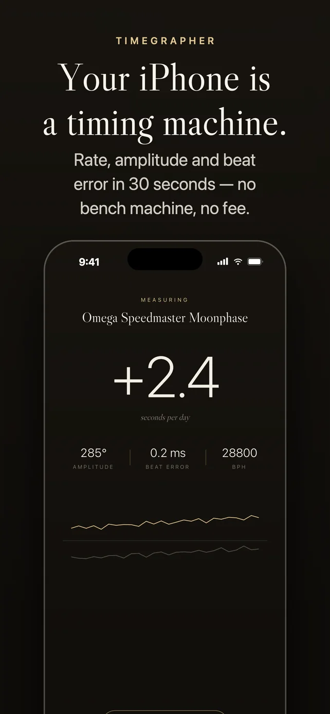
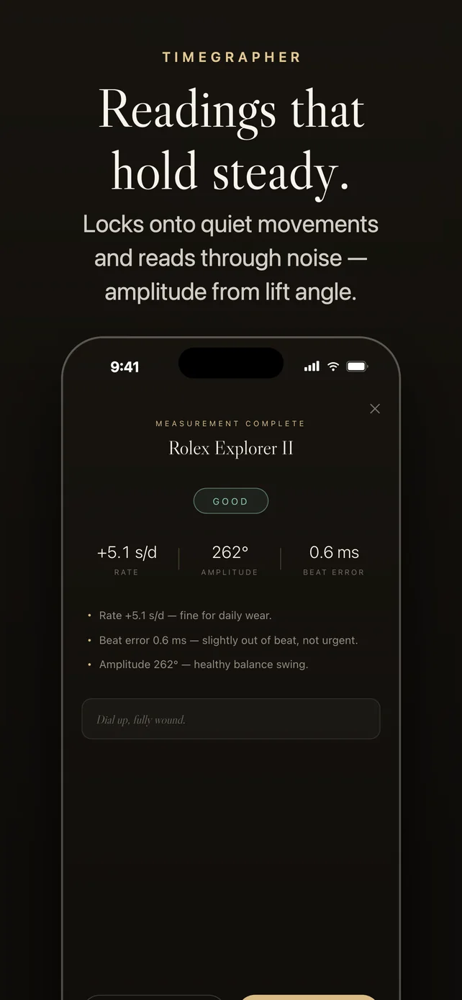
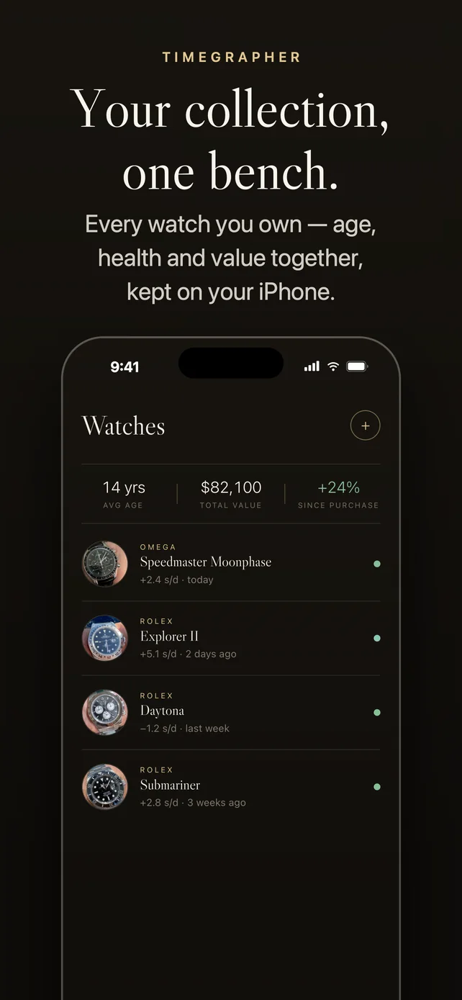
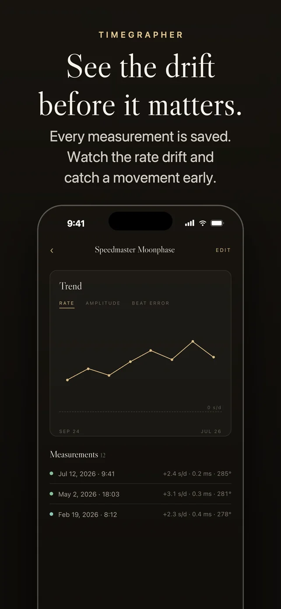
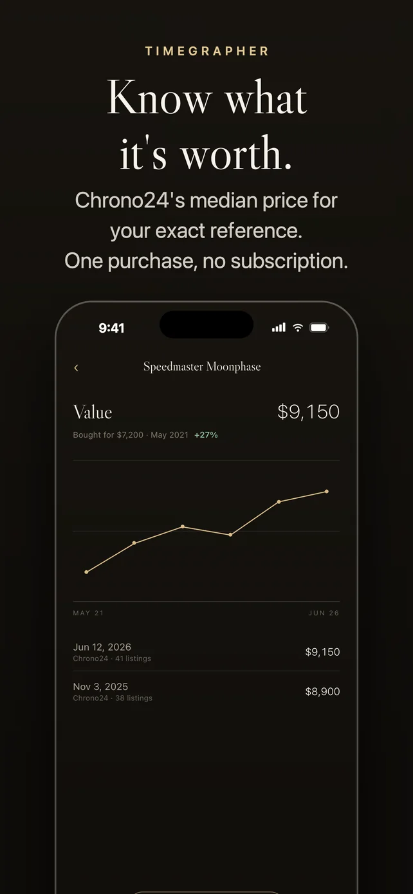

Timegrapher
A watchmaker's timing machine, in your iPhone.





Rate, amplitude and beat error in about thirty seconds. Timegrapher listens to your mechanical watch through the iPhone's microphone, then keeps your whole collection, every reading and what each watch is worth, in one place.
The numbers that matter
Seconds gained or lost per day, how far the balance swings, and tick–tock symmetry. Beat rate detected from 18,000 to 36,000 bph.
Readings that hold steady
It tracks the room's noise floor and rejects stray sounds. Amplitude comes from your calibre's own lift angle.
Your collection
Every watch with its photo, reference, movement and lift angle, and every measurement saved.
See the drift
Charts show the rate across months and years, with a plain-language verdict after each reading.
Know what it's worth
Current Chrono24 asking prices for your exact reference, with the median worked out on your iPhone.
Magnetism check
A magnetized hairspring is the most common reason a watch suddenly gains time. Sweep the watch across the back of your iPhone and its magnetometer tells you whether it needs demagnetizing.
What people say.
-
“Timegrapher is extremely reliable. I get an accurate measure of the rate of my watches in no time! It also let’s me track the price of my collection over the years”
Review on Reddit
- Microphone audio is analyzed live and is never recorded or saved.
- Your collection and measurements are stored only on your iPhone.
- The optional price check searches Chrono24 for your watch's reference. Nothing else is sent.